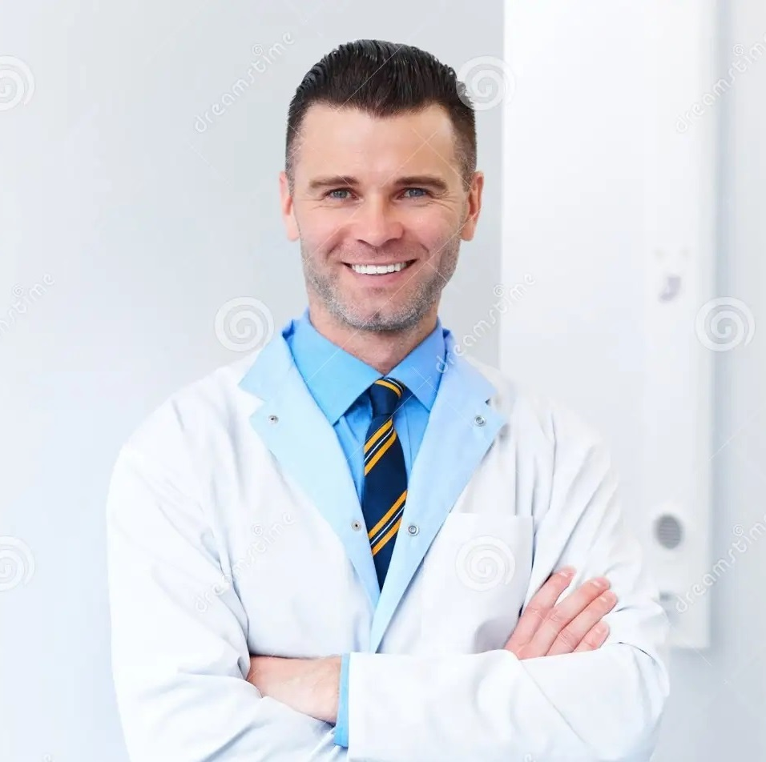
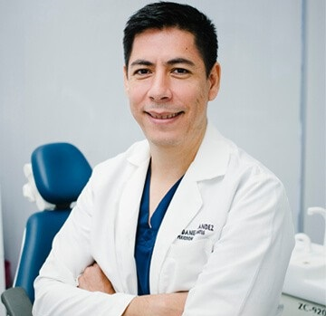

¿QUIENES SOMOS?
Bienvenidos a El Diente Feliz!
Tu Sonrisa, Nuestra Prioridad.
En Consultorio Dental El Diente Feliz, estamos comprometidos a brindarte una experiencia dental excepcional en un ambiente cálido y acogedor. Nuestra misión es no solo cuidar de tu salud bucal, sino también asegurarnos de que te sientas cómodo y confiado durante cada visita.
Nuestro equipo de profesionales altamente capacitados y amables está dedicado a brindarte la mejor atención dental posible. Nos enorgullece mantenernos actualizados con las últimas tecnologías y técnicas dentales, para ofrecerte tratamientos de vanguardia y resultados duraderos.
Entendemos que cada sonrisa es única, por lo que personalizamos cada tratamiento según tus necesidades individuales. Ya sea que necesites una limpieza dental de rutina, blanqueamiento, ortodoncia o cualquier otro procedimiento dental, estamos aquí para ayudarte a lograr la sonrisa radiante que mereces.
En El Diente Feliz, tu comodidad es nuestra prioridad. Nos esforzamos por crear un ambiente relajado y libre de estrés, donde te sientas tranquilo y bienvenido en cada visita. Además, nos comprometemos a brindarte información clara y honesta sobre tus opciones de tratamiento, para que puedas tomar decisiones informadas para tu salud bucal.
Estamos encantados de ser parte de tu viaje hacia una sonrisa saludable y brillante. ¡Esperamos verte pronto en El Diente Feliz!
Tu Sonrisa, Nuestra Pasión.
NUESTROS ESPECIALISTAS
| |

|
Dr. Jairo Campos
Como director del consultorio dental, el Dr. Campos lidera con excelencia y experiencia en diversas áreas de la odontología.
Con años de práctica en ortodoncia, implantología y odontología estética, el Dr. Campos garantiza la más alta calidad en atención dental.
Su enfoque en la actualización constante y su compromiso con la satisfacción del paciente lo convierten en un líder respetado en el campo de la salud bucal.
|
|
| |
Dra. Laura Martínez
Con años de experiencia en odontología general y estética, la Dra. Martínez se destaca por su enfoque amable y atento hacia sus pacientes.
Es reconocida por su habilidad para crear sonrisas hermosas y saludables, brindando tratamientos personalizados que garantizan la satisfacción de sus clientes.
|
|
|
| |
|
Dr. Alejandro López
Experto en ortodoncia y odontopediatría, el Dr. López es conocido por su enfoque amigable y cálido con los más pequeños.
Su dedicación para crear sonrisas perfectas y aliviar las preocupaciones de los niños lo convierten en un dentista de confianza entre las familias.
|
|
| |
Dra. María Rodríguez
Especializada en periodoncia y cirugía oral, la Dra. Rodríguez es reconocida por su habilidad para tratar enfermedades de las encías y realizar procedimientos quirúrgicos con precisión.
Su enfoque profesional y su atención cuidadosa hacia la salud bucal de sus pacientes la hacen destacar en su campo.
|

|
|
| |

|
Dr. Carlos Hernández
Con un enfoque en la odontología restaurativa y cosmética, el Dr. Hernández se destaca por su habilidad para devolver la funcionalidad y estética a las sonrisas dañadas.
Su meticuloso trabajo y pasión por mejorar la confianza de sus pacientes lo convierten en un dentista altamente recomendado.
|
|